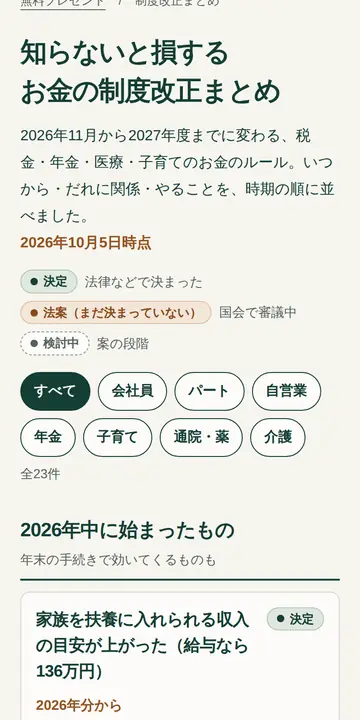
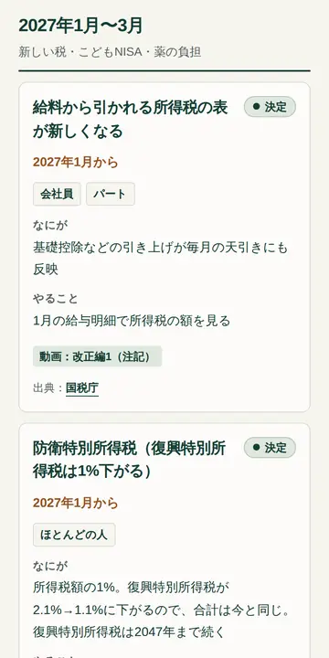
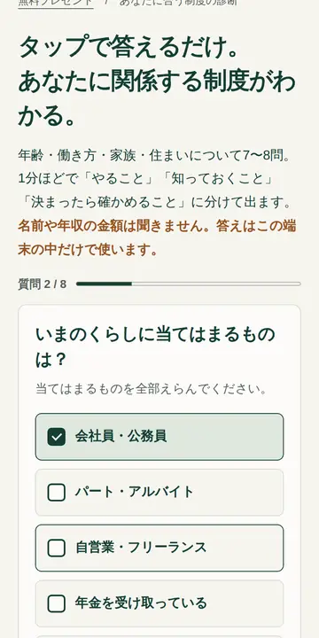
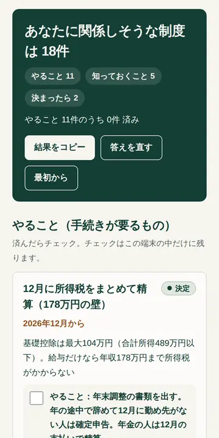
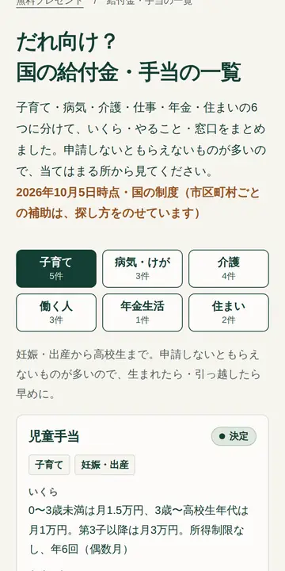
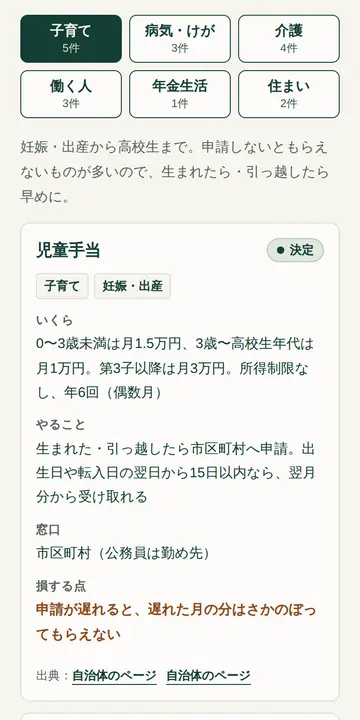

1プレゼント ・ Webページ
知らないと損する お金の制度改正まとめ
2026年11月から2027年度までに変わるお金のルールを、時期の順に並べました。
- 改正23件を「決定・法案・検討中」の札つきで
- いつから・だれに関係・やること・損する点がひと目で
- すべての項目に出典（国税庁・日本年金機構など）のリンク
おかねの地図試作プレビュー
偉人編「知らないと損する制度」の動画と、動画の最後で配る3つの無料プレゼントの試作です。動画は制度ごとに短く分けて、いつの制度か・だれ向けかで選べるようにしました。アプリはそのまま押して試せます。
動画で見る
制度ごとに条件と「やること」まで説明する動画（4本）と、偉人編のショートを制度ごとに切り分けた動画を合わせた13本です。「いつの制度か」と「だれ向けか」を選ぶと、当てはまる動画だけが出ます。押すと、このページの中で再生します。
1いつの制度？
2だれ向け？
ほとんどの人子育て向け
2027年1月から
所得税に1%上乗せ。ただし復興税が1%下がるので、合計は今と同じ（そのぶん長く続く）。こどもNISAは0〜17歳も年60万円まで。
会社員自営業向け
2026年12月分から
企業年金のない会社員は月2.3万円→6.2万円。自営業などは月6.8万円→7.5万円。
通院・薬向け
2027年3月から
湿布・保湿剤・花粉症の薬など77成分。薬代の4分の1が上乗せで、3割負担なら約1.6倍。子どもや入院中の人などは対象外。
会社員パート年金向け
2026年12月
11月まで古い基準で引いた所得税を、12月にまとめて精算。会社員は年末調整、年金は12月の支払いで。
パートほとんどの人向け
2027年10月から・4月から
週20時間以上なら、36人以上の会社でも年収に関係なく社会保険に入ります。子育て支援金は平均で月100円ほど上がります。
通院・薬向け
2027年8月から
区分が細かくなり、収入が高いほど上限が上がります。70歳未満・年収約650〜770万円なら月約8.6万円→約11万円。
会社員パート自営業向け
2027年度法案（まだ決まっていない）
働く中低所得の人に年1回。金額はまだ決まっていません。公金受取口座があれば申請なしで受け取れる仕組みです。
ほとんどの人向け
2027年4月から2年間法案（まだ決まっていない）
食料品の消費税が8%→1%に。ただし店内で食べると10%のまま。お酒も対象外です。
年金向け
年金をもらい始めるとき
60〜75歳で選べ、1か月早めると0.4%減・遅らせると0.7%増。合計で比べた分かれ目は約80歳10か月・86歳11か月。
年金向け
年金をもらい始めるとき
待つ間は加給年金がもらえません。早くもらう請求は取り消せません。正解は健康・貯金・働き方しだい。
年金向け
6月・1月・秋に届く
6月の年金額改定通知書、1月の源泉徴収票、秋の扶養親族等申告書。出さないと税金が多く引かれることも。
年金向け
届いたらすぐ
公金受取口座の意向確認書は45日で同意のあつかい。年金生活者支援給付金のはがきは、出さないともらえません。
介護向け
工事の前に
手すりや段差の工事は原則20万円まで、1割負担なら最大18万円が戻ります。工事の前の申請が必要です。
YouTube・Instagram向けに作った短い版です。再生中に、どこから見るかを選べます。


1プレゼント ・ Webページ
2026年11月から2027年度までに変わるお金のルールを、時期の順に並べました。


2プレゼント ・ Webアプリ
年齢・働き方・家族・住まいにタップで答えると、関係しそうな制度だけを出します。


3プレゼント ・ Webページ
申請しないともらえない国の給付金・手当を、だれ向けかで分けてまとめました。
台本・計画・データのもと。新しいタブで開きます。
制度データ 2026-10.json を直せば3ページとも変わります。